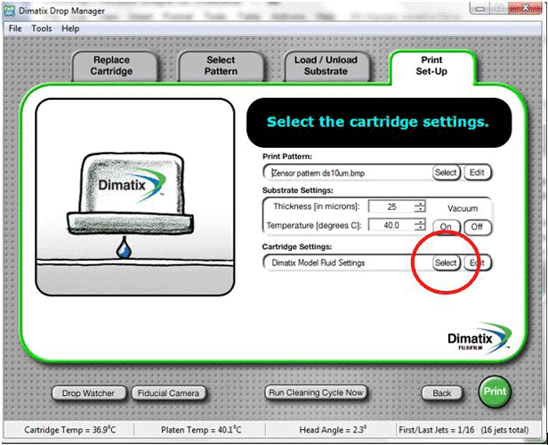

Do you like science and engineering? The YES program is designed to open students' minds to the world of engineering and science in order to delineate and clarify different career fields and to offer them the opportunity to explore their interests.
The students in the Young Engineers and Scientist Program could greatly benefit from more training before entering a research lab.
Click “Yes” when asked “Load the currently selected cartridge settings (Dimatix Model Fluid Settings)?”
This is one point where you can change the cartridge settings. If you need to change the settings click “No” and load one of the saved settings.
Select a Pattern to print.
Click "select" on the pattern tab.
Load a saved pattern.
Click "Next" to take you to the Load/Unload Substrate tab.
In the "Load/Unload Substrate” tab you can change the substrate thickness settings and the substrate temperature.
Change the thickness setting to your best estimate of the substrate thickness and change the temperature by using the arrows or entering the number manually.
Click "Next" to take you to the "Print Set-Up" tab.
The “Print Set-Up” tab is another place to change the cartridge settings (which generally don't need to be modified.)
Click “Select” on the Cartridge Settings bar

Load saved settings
Click “Print” to preview the pattern to be printed, then press “Print” on the window that pops up.
After opening the DImatix Drop Manager, click on the Fiducial Camera (highlighted in the picture below.)
Now make sure the Reference point is deselected (the box circled in red should be deselected.)
To change the position of the printing design, you can click anywhere on the platen box, noted by no. 2 in the picture above, or change the x-position and the y-position of your controls coordinates.
Once you chose your desired position click on Set Print Origin, noted by no.3 in the picture above.
Inkjet printing is an AM technology which only adds material when and where it is needed. It therefore, minimizes waste and makes it ideal for handling expensive materials. This film explains the technology behind piezoelectric inkjet printing at the University of Sheffield and how it can be applied to many areas of research. For example: in tissue engineering, inkjet printing can help to find ways to treat wounds more effectively; in carbon fibre composites, their properties can be improved by strategically placing beneficial additives and in crime applications, unique markings can be produced that can help combat crime.